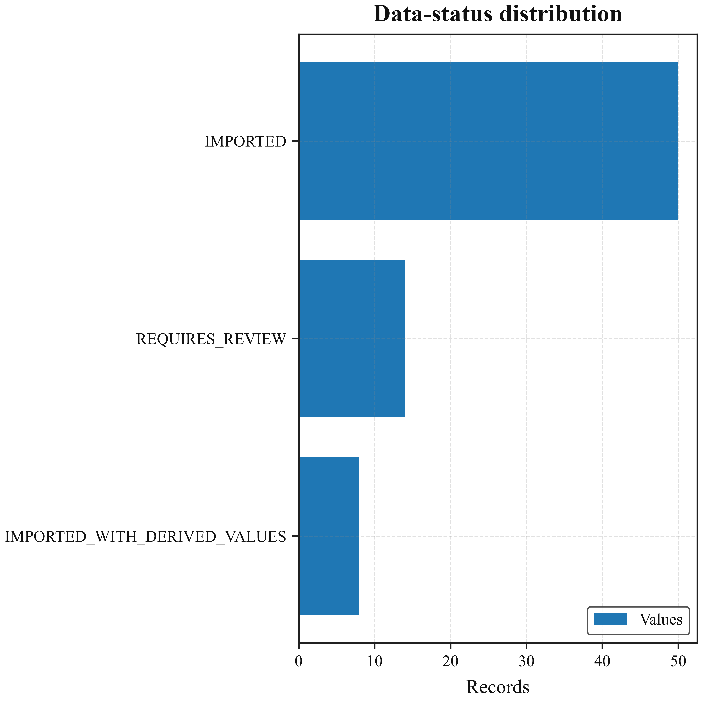
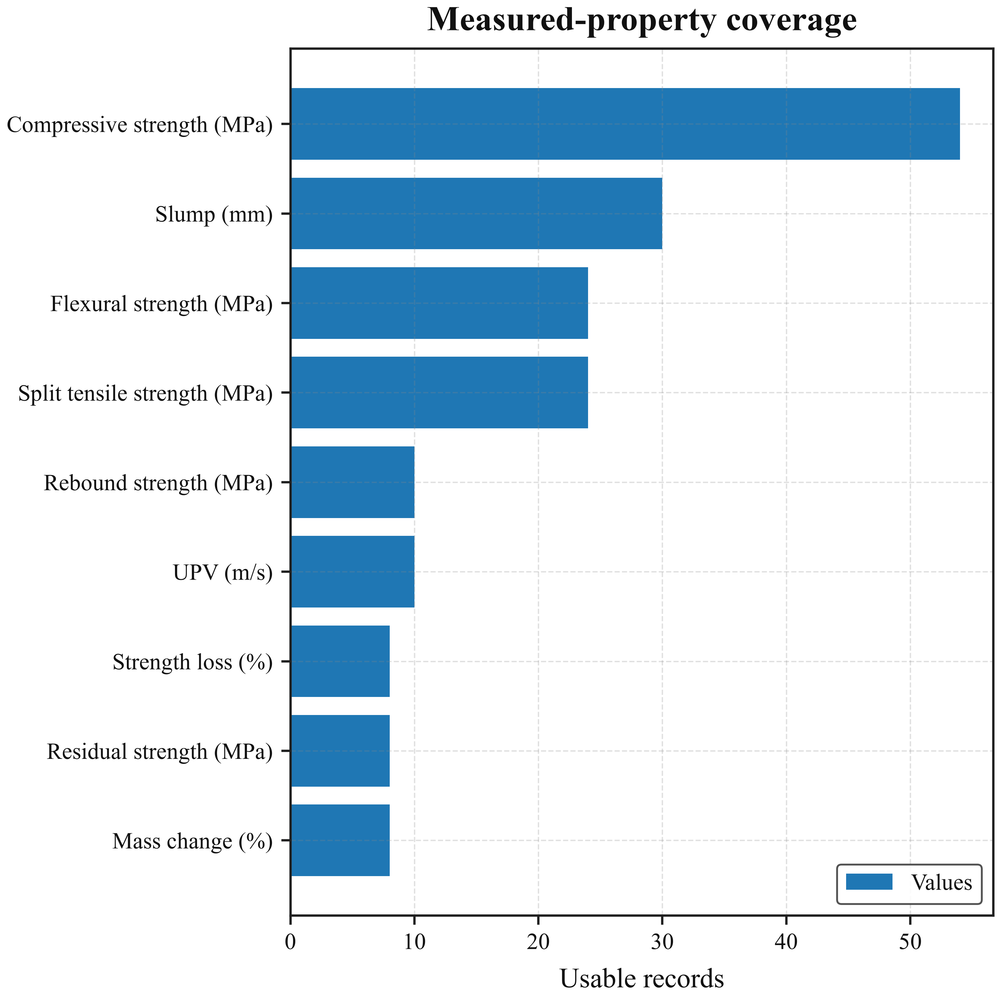
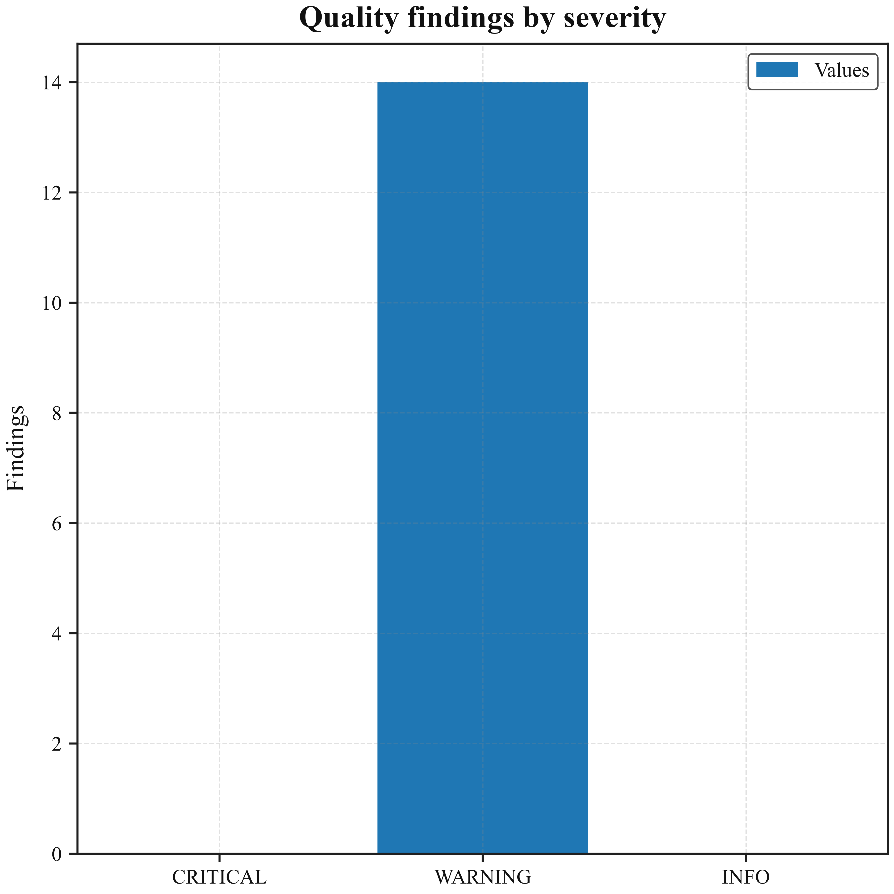
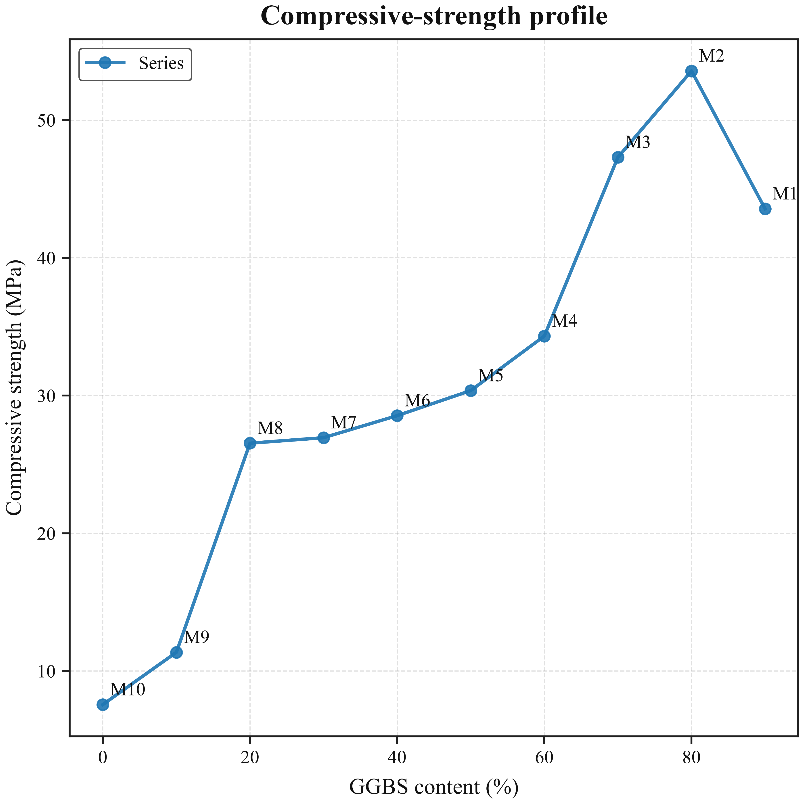

Materials Analytics Report
GPC-DTwin Project
Project summary
72Records
44Fields
10Material mixes
6Measurement groups
14Quality findings
8Stored artifacts
Data coverage
| Record group | Records |
|---|---|
| AASB_WORKABILITY_AND_28D_COMPRESSIVE | 30 |
| AMBIENT_7D_MECHANICAL | 10 |
| AMBIENT_28D_MECHANICAL | 10 |
| NON_DESTRUCTIVE_TESTS | 10 |
| ACID_DURABILITY_28D | 8 |
| OVEN_100C_24H_MECHANICAL | 4 |
Data status
| Data status | Records |
|---|---|
| IMPORTED | 50 |
| REQUIRES_REVIEW | 14 |
| IMPORTED_WITH_DERIVED_VALUES | 8 |
Quality summary
0Critical
14Warning
0Information
| severity | rule | Record ID | Mix ID | field | message | Data block | Data locator |
|---|---|---|---|---|---|---|---|
| WARNING | REVIEW_FLAG | GPC-0001 | M1 | data_status | Record is marked 'REQUIRES_REVIEW'. | Workability and AAS:B response | GPC-0001 |
| WARNING | REVIEW_FLAG | GPC-0013 | M5 | data_status | Record is marked 'REQUIRES_REVIEW'. | Workability and AAS:B response | GPC-0013 |
| WARNING | REVIEW_FLAG | GPC-0016 | M6 | data_status | Record is marked 'REQUIRES_REVIEW'. | Workability and AAS:B response | GPC-0016 |
| WARNING | REVIEW_FLAG | GPC-0019 | M7 | data_status | Record is marked 'REQUIRES_REVIEW'. | Workability and AAS:B response | GPC-0019 |
| WARNING | REVIEW_FLAG | GPC-0022 | M8 | data_status | Record is marked 'REQUIRES_REVIEW'. | Workability and AAS:B response | GPC-0022 |
| WARNING | REVIEW_FLAG | GPC-0025 | M9 | data_status | Record is marked 'REQUIRES_REVIEW'. | Workability and AAS:B response | GPC-0025 |
| WARNING | REVIEW_FLAG | GPC-0028 | M10 | data_status | Record is marked 'REQUIRES_REVIEW'. | Workability and AAS:B response | GPC-0028 |
| WARNING | REVIEW_FLAG | GPC-0041 | M1 | data_status | Record is marked 'REQUIRES_REVIEW'. | Ambient 28-day mechanical properties | GPC-0041 |
| WARNING | REVIEW_FLAG | GPC-0045 | M5 | data_status | Record is marked 'REQUIRES_REVIEW'. | Ambient 28-day mechanical properties | GPC-0045 |
| WARNING | REVIEW_FLAG | GPC-0046 | M6 | data_status | Record is marked 'REQUIRES_REVIEW'. | Ambient 28-day mechanical properties | GPC-0046 |
| WARNING | REVIEW_FLAG | GPC-0047 | M7 | data_status | Record is marked 'REQUIRES_REVIEW'. | Ambient 28-day mechanical properties | GPC-0047 |
| WARNING | REVIEW_FLAG | GPC-0048 | M8 | data_status | Record is marked 'REQUIRES_REVIEW'. | Ambient 28-day mechanical properties | GPC-0048 |
| WARNING | REVIEW_FLAG | GPC-0049 | M9 | data_status | Record is marked 'REQUIRES_REVIEW'. | Ambient 28-day mechanical properties | GPC-0049 |
| WARNING | REVIEW_FLAG | GPC-0050 | M10 | data_status | Record is marked 'REQUIRES_REVIEW'. | Ambient 28-day mechanical properties | GPC-0050 |
Analytical figures




Dataset preview
First 20 records and up to 12 fields.
| Record ID | Record group | Dataset origin | Data block | Data locator | Mix ID | FA:GGBS:SF | FA (%) | GGBS (%) | SF (%) | Coarse aggregate (kg/m³) | Fine aggregate (kg/m³) |
|---|---|---|---|---|---|---|---|---|---|---|---|
| GPC-0001 | AASB_WORKABILITY_AND_28D_COMPRESSIVE | Bundled reference dataset | Workability and AAS:B response | GPC-0001 | M1 | 0:90:10 | 0 | 90 | 10 | 1186.03 | 508.3 |
| GPC-0002 | AASB_WORKABILITY_AND_28D_COMPRESSIVE | Bundled reference dataset | Workability and AAS:B response | GPC-0002 | M1 | 0:90:10 | 0 | 90 | 10 | 1186.03 | 508.3 |
| GPC-0003 | AASB_WORKABILITY_AND_28D_COMPRESSIVE | Bundled reference dataset | Workability and AAS:B response | GPC-0003 | M1 | 0:90:10 | 0 | 90 | 10 | 1186.03 | 508.3 |
| GPC-0004 | AASB_WORKABILITY_AND_28D_COMPRESSIVE | Bundled reference dataset | Workability and AAS:B response | GPC-0004 | M2 | 10:80:10 | 10 | 80 | 10 | 1186.03 | 508.3 |
| GPC-0005 | AASB_WORKABILITY_AND_28D_COMPRESSIVE | Bundled reference dataset | Workability and AAS:B response | GPC-0005 | M2 | 10:80:10 | 10 | 80 | 10 | 1186.03 | 508.3 |
| GPC-0006 | AASB_WORKABILITY_AND_28D_COMPRESSIVE | Bundled reference dataset | Workability and AAS:B response | GPC-0006 | M2 | 10:80:10 | 10 | 80 | 10 | 1186.03 | 508.3 |
| GPC-0007 | AASB_WORKABILITY_AND_28D_COMPRESSIVE | Bundled reference dataset | Workability and AAS:B response | GPC-0007 | M3 | 20:70:10 | 20 | 70 | 10 | 1186.03 | 508.3 |
| GPC-0008 | AASB_WORKABILITY_AND_28D_COMPRESSIVE | Bundled reference dataset | Workability and AAS:B response | GPC-0008 | M3 | 20:70:10 | 20 | 70 | 10 | 1186.03 | 508.3 |
| GPC-0009 | AASB_WORKABILITY_AND_28D_COMPRESSIVE | Bundled reference dataset | Workability and AAS:B response | GPC-0009 | M3 | 20:70:10 | 20 | 70 | 10 | 1186.03 | 508.3 |
| GPC-0010 | AASB_WORKABILITY_AND_28D_COMPRESSIVE | Bundled reference dataset | Workability and AAS:B response | GPC-0010 | M4 | 30:60:10 | 30 | 60 | 10 | 1186.03 | 508.3 |
| GPC-0011 | AASB_WORKABILITY_AND_28D_COMPRESSIVE | Bundled reference dataset | Workability and AAS:B response | GPC-0011 | M4 | 30:60:10 | 30 | 60 | 10 | 1186.03 | 508.3 |
| GPC-0012 | AASB_WORKABILITY_AND_28D_COMPRESSIVE | Bundled reference dataset | Workability and AAS:B response | GPC-0012 | M4 | 30:60:10 | 30 | 60 | 10 | 1186.03 | 508.3 |
| GPC-0013 | AASB_WORKABILITY_AND_28D_COMPRESSIVE | Bundled reference dataset | Workability and AAS:B response | GPC-0013 | M5 | 40:50:10 | 40 | 50 | 10 | 1186.03 | 508.3 |
| GPC-0014 | AASB_WORKABILITY_AND_28D_COMPRESSIVE | Bundled reference dataset | Workability and AAS:B response | GPC-0014 | M5 | 40:50:10 | 40 | 50 | 10 | 1186.03 | 508.3 |
| GPC-0015 | AASB_WORKABILITY_AND_28D_COMPRESSIVE | Bundled reference dataset | Workability and AAS:B response | GPC-0015 | M5 | 40:50:10 | 40 | 50 | 10 | 1186.03 | 508.3 |
| GPC-0016 | AASB_WORKABILITY_AND_28D_COMPRESSIVE | Bundled reference dataset | Workability and AAS:B response | GPC-0016 | M6 | 50:40:10 | 50 | 40 | 10 | 1186.03 | 508.3 |
| GPC-0017 | AASB_WORKABILITY_AND_28D_COMPRESSIVE | Bundled reference dataset | Workability and AAS:B response | GPC-0017 | M6 | 50:40:10 | 50 | 40 | 10 | 1186.03 | 508.3 |
| GPC-0018 | AASB_WORKABILITY_AND_28D_COMPRESSIVE | Bundled reference dataset | Workability and AAS:B response | GPC-0018 | M6 | 50:40:10 | 50 | 40 | 10 | 1186.03 | 508.3 |
| GPC-0019 | AASB_WORKABILITY_AND_28D_COMPRESSIVE | Bundled reference dataset | Workability and AAS:B response | GPC-0019 | M7 | 60:30:10 | 60 | 30 | 10 | 1186.03 | 508.3 |
| GPC-0020 | AASB_WORKABILITY_AND_28D_COMPRESSIVE | Bundled reference dataset | Workability and AAS:B response | GPC-0020 | M7 | 60:30:10 | 60 | 30 | 10 | 1186.03 | 508.3 |
Stored artifact inventory
8 files were indexed at report generation.
| category | name | relative_path | size_bytes | modified_utc | sha256 |
|---|---|---|---|---|---|
| Predictive models | split_tensile_strength_mpa__extra_trees__20260731T123050607637Z.joblib | split_tensile_strength_mpa__extra_trees__20260731T123050607637Z.joblib | 496197 | 2026-07-31T12:30:50Z | 93fa17d1d9457c8f7ef307d96be2eb16124a157720875d957474009b97614526 |
| Predictive models | split_tensile_strength_mpa__extra_trees__20260731T123050607637Z.json | split_tensile_strength_mpa__extra_trees__20260731T123050607637Z.json | 3042 | 2026-07-31T12:30:50Z | ad2a27cbad4f08e0197ef4d0bfd93fcbd601e6d8a0769d24e80005897d494b40 |
| Digital twins | compressive_strength_mpa__gaussian_process__20260730T184122996367Z.joblib | compressive_strength_mpa__gaussian_process__20260730T184122996367Z.joblib | 31244 | 2026-07-30T18:41:23Z | 25a3ca622028d4a8594c8d340a5fc1f0f0856ff162a63828e6e7856f618043d0 |
| Digital twins | compressive_strength_mpa__gaussian_process__20260730T184122996367Z.json | compressive_strength_mpa__gaussian_process__20260730T184122996367Z.json | 2543 | 2026-07-30T18:41:23Z | 0646a8ffe441322266ef87a6b34f82b2ce9fe684c1bc87b6b780f28d426ae279 |
| Digital twins | split_tensile_strength_mpa__forest_ensemble__20260731T123259962769Z.joblib | split_tensile_strength_mpa__forest_ensemble__20260731T123259962769Z.joblib | 484150 | 2026-07-31T12:33:00Z | 260e92e241e125c1063f0b4f294b28ddf90be83dd2b24f3daaa56e2de7bfa033 |
| Digital twins | split_tensile_strength_mpa__forest_ensemble__20260731T123259962769Z.json | split_tensile_strength_mpa__forest_ensemble__20260731T123259962769Z.json | 2746 | 2026-07-31T12:33:00Z | f620b0ade18b663f56a87def2ec2f711a08705625e5cc31c25c676b2a2ee3acd |
| NDT models | ndt_composition_ndt_ridge_regression_20260730_184149.joblib | ndt_composition_ndt_ridge_regression_20260730_184149.joblib | 3589 | 2026-07-30T18:41:49Z | a5269d913995ec14a37a2e61e14cff22d4f7805c74e6d383a5eaaf7e0f329310 |
| NDT models | ndt_composition_ndt_ridge_regression_20260730_184149.json | ndt_composition_ndt_ridge_regression_20260730_184149.json | 1399 | 2026-07-30T18:41:49Z | f80a9e2f7e59c3671c22d5b4b89d05db55d3fd774b7c8113213880e373f4da97 |
Reproducibility information
The accompanying manifest records the software version, environment, fingerprints, report options, stored-artifact inventory, and file checksums.
Python: 3.12.10
Platform: Windows-11-10.0.26200-SP0
Dataset fingerprint: a8087017eb93cb2bf999dc8d5fba6d32a658270e30f4ff4b72c92b578b907742